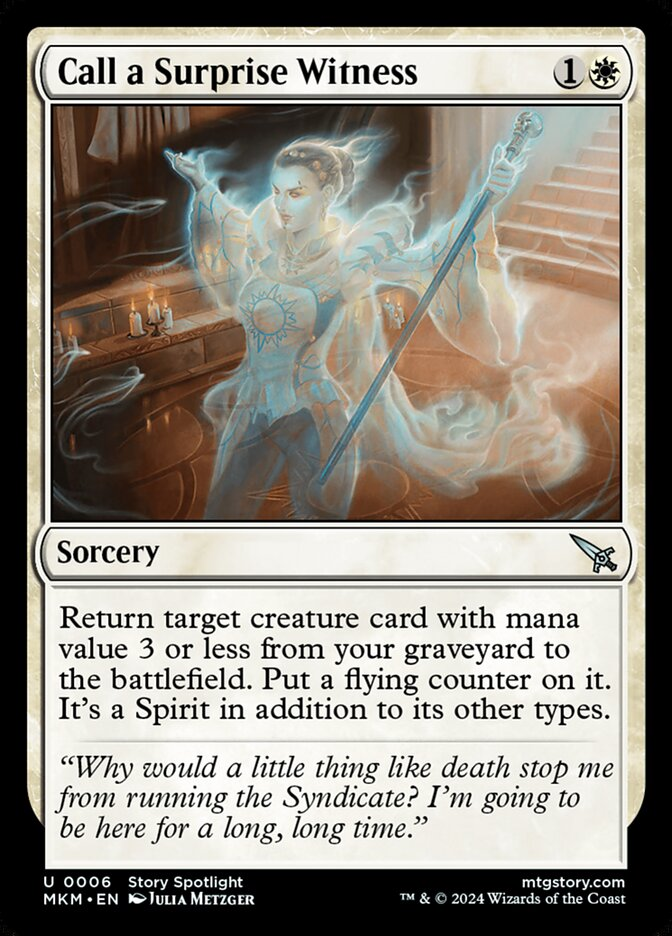
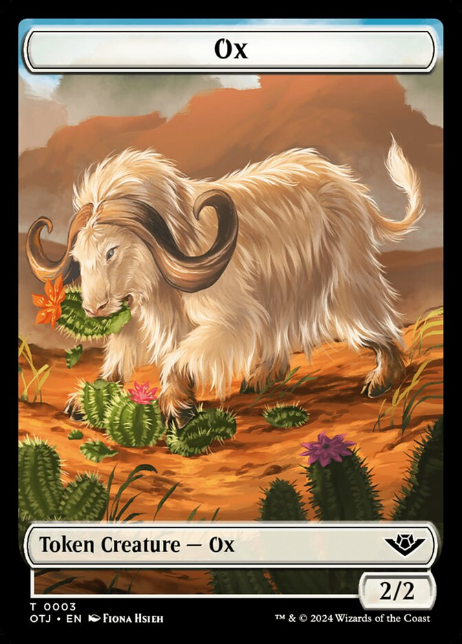
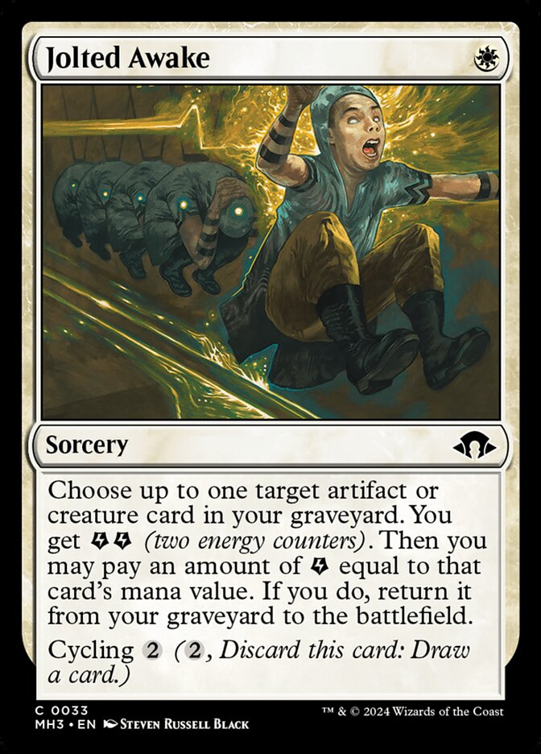
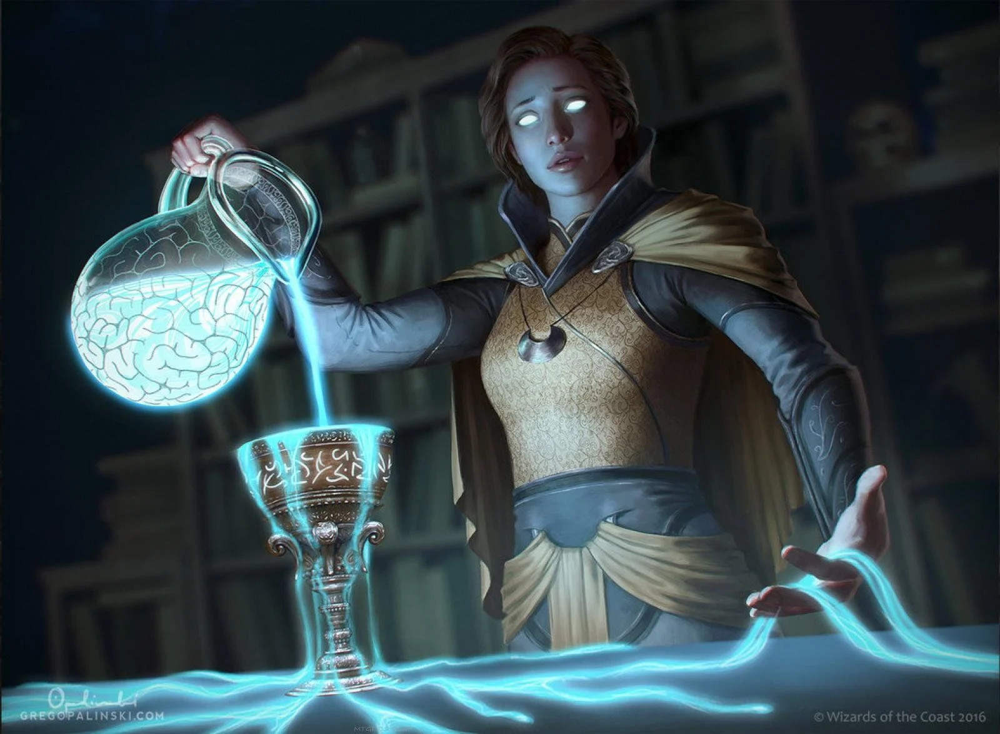
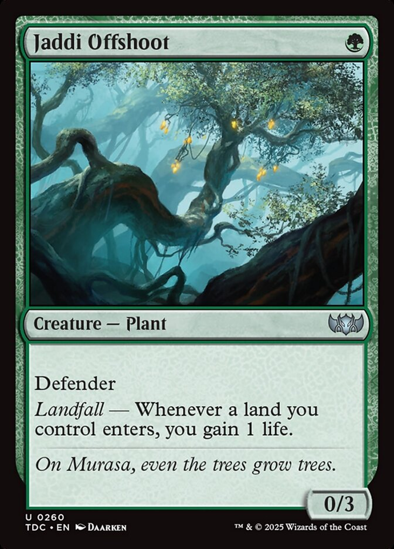

(10 min. read)
I’m gonna brag a bit! A while ago, my brother and I made a Magic format. It’s called A Eulogy for Skullbriar and His Wife. It’s a Dandan style format, with lore! And the lore is very silly. I'm really proud of the way it turned out!

For those who don't know, Dandan is a very beloved Magic format. Both players use the same library and the card pool is intentionally very limited to create unique gameplay. But whereas original Dandan (AKA Forgetful Fish) is a mono blue control battle, fighting over card draw and counterspells, our Skullbriar goes in a different direction, focusing entirely on the battlefield and fighting over the shared graveyard. We've actually found people who didn't like Dandan actually like this format more.

Like in true blue Dandan, both players share a library and graveyard. I found the original notes from two years ago that sparked the idea and Skullbriar was there from the beginning. He's the primary thing to fight over in the graveyard and puts a natural clock on the game. We kinda built the whole format around him initially. Here's some cards that were initally considered for the list.


These were fun ideas, but intial progress was really stalled because I was obsessed with recreating the feel of the original format. I'm sure many designers can relate to this. You can't stop thinking in terms of your inspiration and it holds you back. For instance, card advantage is very important in Dandan so I assumed Skullbriar should also focus on it. I was stuck in a rut of trying to make card advantage important (in a mono white deck). Magic players are definitely laughing at me right now for that. I got out of the rut by actually playtesting the dang thing! (shocker: playtesting is good). That first playtest with a friend wasn’t fun yet, but after a lot of trial and error we settled on something fun.


We decided Bovine Intervention would be the only removal, which is hilarious because every creature in the format trades with a 2/2. Giving your opponent one of these stupid cows feels like digging your own grave and makes the gameplay very unique.


Bagel and Schmear was first revealed literally while we were in the middle of a playtest. My brother's friend messaged him about it during his turn. And it was kinda the final piece to the puzzle. Looping bagels using Jolted Awake is very powerful and controlling bagels can be the most important part of the game. (For more details check the Cube Cobra page).

One thing we tried during playtests is having a second card start in the graveyard alongside Skullbriar. As a joke I started calling them husband and wife. It was pretty funny implying this beautiful woman was married to this Nils Hamm monstrosity. That’s where the lore came from. Mr. and Mrs. Skullbriar have died and these cards are parts of their lives flashing before their eyes. (That’s why the recursion card is Jolted Awake)



I think most Dandan imitators focus on the fish himself. “Let’s replace the fish with lighting bolts.” is a very common thought that also plays horribly. Anyone who’s played Forgetful Fish knows the key to the format isn’t the titular fish but Memory Lapse. And if you remember, I started my own design with “Skullbriar but shared graveyard.”
Notice a pattern? They both are “X Card plus shared Y”. Maybe there’s a useful heuristic there? And maybe there’s more design space in that mold? Here’s a 2d8 table with zones plus card types.
Let's give it a rip ourselves.
Looking at the table, 5 & 5 means sorcery plus shared nonlands. Ok, whenever a player casts a nonland it goes into a shared battlefield. And the key card is a sorcery. Maybe… Sweltering Suns? Everyone’s creatures are shared, but anyone can wipe the board? And 4 toughness creatures are key because they survive the board wipe. We might be getting somewhere.

A funny quirk is that if you play a creature, your opponent is the first to attack with it because it loses summoning sickness on their turn. This effectively makes aggro impossible. And because all creatures are shared the only creatures that can block are defenders. So lets add with one of them.


So the game is about making sure there’s more 2/2s on the board during your turn and more defenders on your opponent’s turn. Maybe both players start at 1 life. An aesthetic is already starting to form, maybe it’s the end of the world with fire raining from the sky. The werewolf is interesting because it if flips it can kill the wall, so controlling when the werewolf flips is important.
If both players start at 1 life the game becomes very all-gas-no-brakes. It only takes one successful attack to win. I’m worried it won’t be interactive, just players dumping their hand, but of course if you just dump your hand your opponent will have those resources too. I can’t tell if there’s anything cool here. Well, if I learned anything from Skullbriar it’s that playtesting is important. This wall is really boring though, so here’s some other options.


NEED ENDING AARON. ALSO ALIGN ALL THOSE PICTURES SO THEY SHOW UP CORRECTLY. ALSO WRAPPING CAPTIONS.